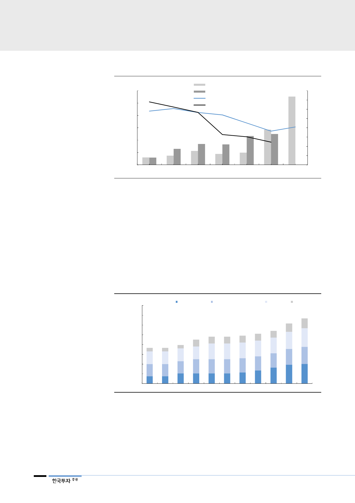

[그림 10] 중국 방열시트(인조 흑연 방열시트) 가공 업체 실적은 2018년에도 성장할 것
(백만위안)
1,200
1,000
800
600
400
200
0
2012
2013
Jones Tech 매출액(좌)
Tanyuan 매출액(좌)
Jones Tech 매출총이익률(우)
Tanyuan 매출총이익률(우)
2014
2015
2016
2017
(%)
80
70
60
50
40
30
20
10
0
2018F
자료: SA, 한국투자증권
방열시트향 PI필름 출하량은
SKC코오롱PI가 경쟁업체 중
가장 큰 것으로 추정
PI필름의 업체별 공급능력을 살펴보면, FPCB 및 방열시트용 PI필름 생산업체
(SKC코오롱PI, Dupont/Toray-dupont, Kaneka, Taimide)의 생산능력은
2014~2017년 SKC코오롱PI를 제외하면 증가하지 않은 것으로 추정된다. 2014
년 전체 생산능력은 9,620톤, 2017년 생산능력은 10,220톤으로 추정된다. 경쟁
사의 생산능력 증가가 없었던 이유는 FPCB향 수요가 스마트폰 출하량 성장속도
가 둔화된 2014년부터 완만하게 성장했기 때문에 PI필름 업체들이 기존 보유 생
산능력으로 대응하는데 충분했기 때문이다. 유일하게 2016년, 2018년에 증설을
완료한 SKC코오롱PI의 점유율이 상승하게 된 배경이다.
[그림 11] 전세계 PI필름 생산능력: SKC코오롱PI의 생산능력 증가는 꾸준히 지속
(톤/연)
16,000
SKC코오롱PI Dupont/Toray-dupont Kaneka Taimide
14,000
12,000
10,000
8,000
6,000
4,000
2,000
0
2010 2011 2012 2013 2014 2015 2016 2017 2018F 2019F 2020F
자료: 한국투자증권
뒤늦게 증설을 준비하는
경쟁업체들은 본격적인 라인
양산 가동 2020년에나 가능
6
2018년 들어 경쟁업체들이 생산능력 증가를 차례로 언급하고 있는데 기존 설비
들이 SKC코오롱PI를 제외하고는 FPCB향으로 집중되어있어 방열시트용 PI필름
양산에 적합하지 않거나 PI필름의 물성(적합한 성질)이 달라 방열시트향으로 신
규 생산능력을 증가시키려 하기 때문인 것으로 추정된다. 기회는 SKC코오롱PI에
게 있다. 대규모 양산 중인 방열시트용 PI필름 출하량과 점유율을 더 높이기 위
해 2019~2020년 capa 증설 계획을 발표했다.